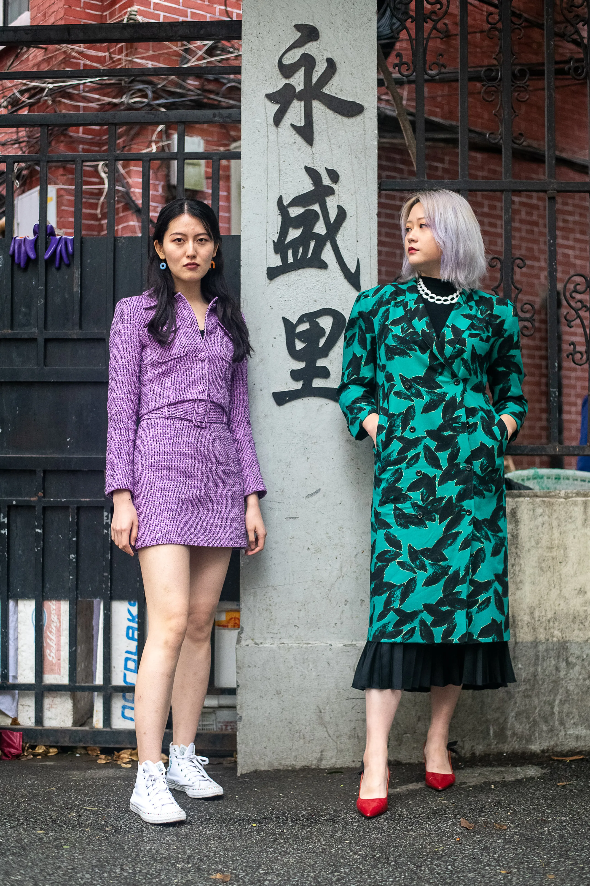
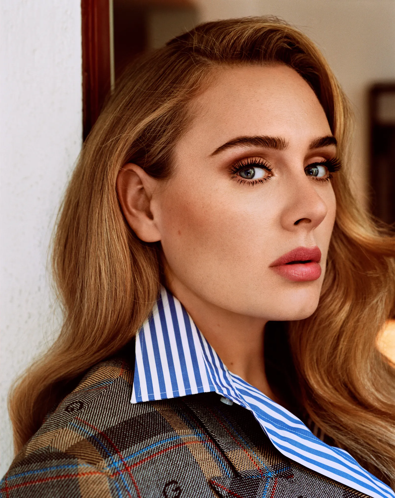
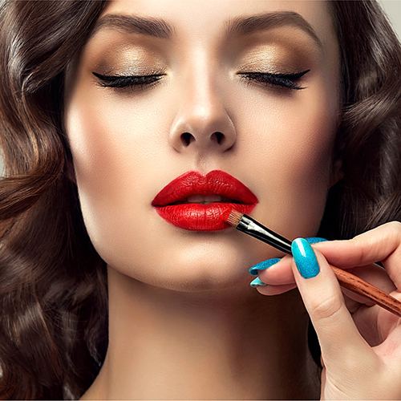
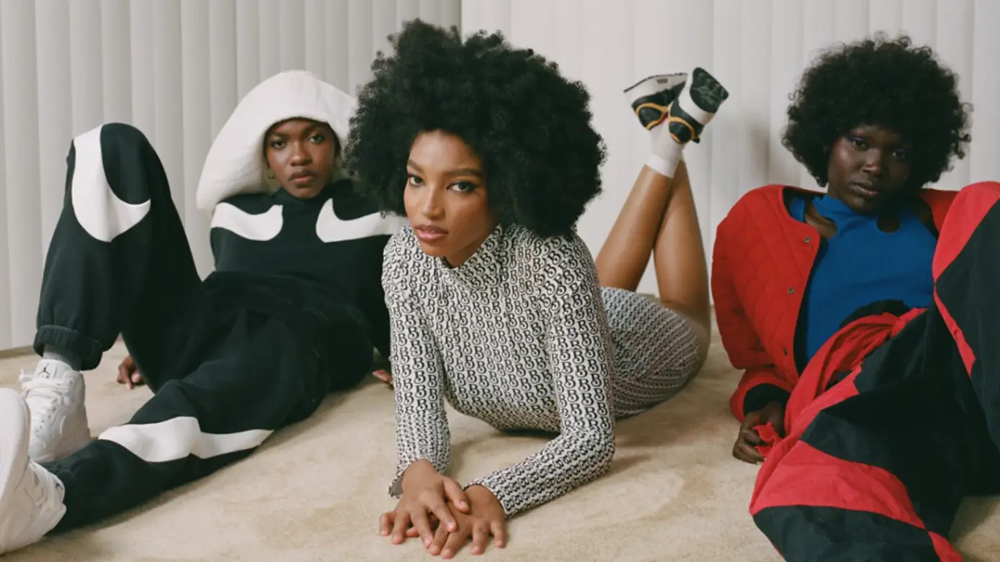
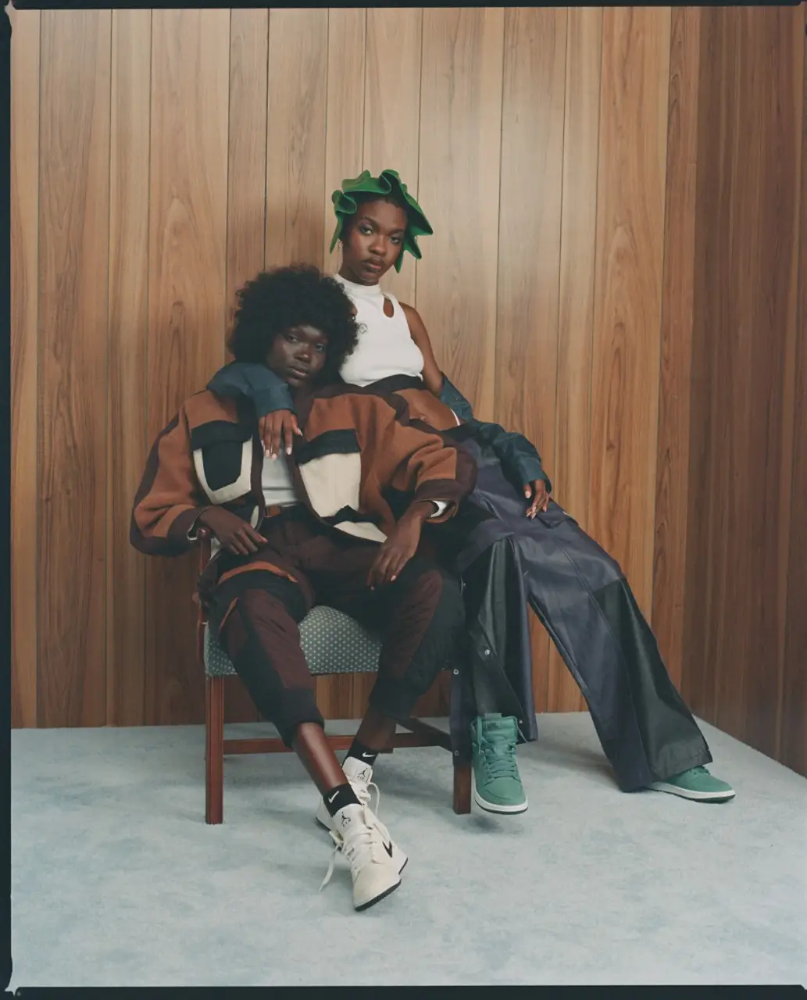

Years ago, we started calling it fashion month, not Fashion Week, and now it ss more like fashion months, plural. Truthfully, it is always Fashion Week somewhere. Just days after the spring 2022 shows wrapped in Paris, hundreds of designers are gearing up for Shanghais second IRL, post-pandemic Fashion Week. From the main venue in Xintiandi to Labelhoods buzzy emerging-designer platform, the week will be busier than anything we have seen in New York or Europe yet. Dave Tacon is on the ground covering all of the best street style between the shows; scroll through his latest coverage here.

Choose which outfit looks better? :
On my way to Heart and Hustle, a private gym in West Hollywood, where I will be joining Adele for her Monday morning workout, I get the distinct feeling that the Queen of Hearts is about to put me through my paces. It is inevitable to some degree. Adele has been doing rigorous weight-lifting and circuit-training sessions every day—twice a day if her anxiety is running high—for three years and counting. It is also true that if, say, the whole world went nuts at the first sight of your significant weight loss, and aired a lot of uninformed theories and loud opinions about your significant weight loss, one way to set the record straight and reclaim the narrative would be to put a journalist to absolute shame at your gym. When she arrives, breezing through the back door in head-to-toe spandex, my fate is clear. Adele is not merely fit. She is a brick house, with the kind of muscle definition that is visible through leggings. Heart and Hustle is a no-frills establishment, owned by two guys from New York and Philly—the back entrance was designed to resemble something from Goodfellas—and one of them, Gregg Miele, is here to lead our workout. Within minutes, Adele is going to town on an elliptical, and I am just a few feet away, swishing around on another machine, already short of breath.
 
Select a makeup type :
She starts peppering me with questions, cutting to the quick in that uniquely disarming way that compels you to do the same. When this is sustained for any period of time, it results in a turbo-speed confessional that can only be conveyed with a timeline. Two minutes and 50 seconds in: Adele mentions that she has a bad back. I tell her that I have two slipped discs. We establish that she has the same slipped discs (L5 and L6). Three and a half minutes in: While going hard on the elliptical, Adele remarks, ''I am always a bit hungover on Monday morning.'' Lockdown turned me into a seven-nights-a-week wine drinker, I tell her. She nods and says: ''It got earlier and earlier, the drinking.'' Six minutes in: Adele says that she has probably spent more time with Miele in the last three years than anyone else. ''All these other people have come out saying that they trained me, '' she says. ''Fuckin weirdos. I have never met them in my life!'' Nine and a half minutes in: I ask if COVID took an emotional toll. Adele responds that much of the emotional stuff her friends went through, she had gone through the year before, in the middle of her divorce. (Adele was married to the charity executive Simon Konecki for two years. They have a nine-year-old son, Angelo.) ''Everyone had to face a lot of their demons, because they had so much time on their hands with nothing to distract them, '' she says. ''They had to face themselves in isolation. Whereas I did that the year before.'' Eleven minutes in: Back on the subject of alcohol and lockdown. ''My first emergency run at the grocery store was for Whispering Angel and ketchup, '' Adele says, referring to her favorite rose. ''Whispering Angel turned me into a barking dog. It did not make me whisper.'' Twelve minutes in: I tell her that when lockdown lifted, I felt like an Edie emerging from Grey Gardens. ''I got some of the worst ingrown hairs I have ever had in my life,'' she replies. It goes on like this for an hour, as Adele proceeds through every weight machine and I wilt in the manner of someone who has not seen the inside of a gym since 2016. She spent many pandemic days and nights here, working out while a movie played on the TV. The Rocky series was a favorite, which may partially account for the boxing gloves she is hung on a wall nearby. (One says FUCK, the other ORF.) Gucci has set the location for its upcoming “Gucci Love Parade” fashion show. Los Angeles’ Hollywood Boulevard will be playing set to the show scheduled to take place on November 2. Gucci selected Los Angeles because they wanted to highlight the intersection of creativity and culture within the city and its rebirth post pandemic. As part of Gucci is Equilibrium program, the brand will provide support to Los Angeles and Hollywood communities through a donation to the city is homelessness and mental health programs. This year, Gucci is also marking its 100th anniversary. Gucci is parent company Kering recently posted Q3 results, and while the overall company saw growth, Gucci did fall short of expectations. The brand, along with Balenciaga, are considered the two biggest cash cows for Kering.

Multibrand retailer Nordstrom has launched a partnership with marketplace Black Owned Everything, a platform promoting Black-owned businesses, and its founder Zerina Akers. The collaboration sees Akers and Nordstrom come together on a curated selection featuring four Black-owned brands, displayed alongside new Nike and Jordan collections in the Nordstrom x Nike dedicated online space. Labels included in the curation are William Okpo, Sammy B, LEnchanteur and handbag designer Brandon Blackwood. ''When we launched Black Owned Everything back in February of this year, partnerships like Nordstrom x Nike were exactly the type of activations I had in mind to amplify the reach of the Black designers whom I work with and mentor'' said Akers, in a release. She continued: ''This intersection of well-established brands and emerging designers is where the progress of Black Owned Everything is mission takes place.'' The inclusion of these selected designers is a big step for their individual career paths and an even bigger step in the right direction for the American marketplace and beyond. Sportswear label Fila has unveiled a collaboration with birdwatching initiative Flock Together in the form of an apparel and footwear capsule, to be exclusively sold through LN-CC. In a range of hike-wear gear made for urban exploring, the collection intends to bring people into nature and engage with their community. The selection includes a reinvented version of the Fila Trailblazer hiking shoe and two shearling fleece designs. The colourways of the line are inspired by the Kingfisher bird, with a scannable near field communication (NFC) tag present in the hiking shoe that takes buyers to a dedicated page outlining the best places in the UK to spot a Kingfisher. 15 percent of all sales of the collection will go towards the Flock Together community fund. Buying and creative director at LN-CC, Reece Crisp, expressed his enthusiasm over the collaboration in a release, stating: ''We are super excited for LN-CC to be part of this project. ''Flock Together encompasses everything that is great about community and wellness, two driving forces that are integral to LN-CC too. ''Flock Togethers growth has been both a reaction to, and antidote from, a difficult eighteen months by bringing people together and encouraging outdoor consciousness, so we are honoured to share our platform in amplifying its much-needed positivity while working with Fila in creating this tribute to the Kingfisher.'' Flock Together, founded back in the 2020 covid-19 lockdowns, brings BIPOC together to engage in birdwatching and other nature-oriented activities. It has previously partnered on an event with Timberland, hosting a range of spoken word presentations at the nature reserve, Woodbury Wetlands. Sponsored by the apparel label, the event aimed to promote the voices in its growing community adjacent to guiding guests through the nature reserve.

''This curation is a fun mix of fashion and lifestyle pieces for the people who are keen to street trends and enjoy functionality.'' Simultaneous with the online presence of the collection, Black Owned Everything merchandise will also be available at four Nordstrom x Nike pop-ups in US-based Nordstrom stores.